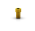

Drivers GM para contra-ângulo
:: Disponível em aço inoxidável;
:: Com código de cores segundo a anilha da guia
cirúrgica;
:: Para iniciar a colocação do implante através da
guia cirúrgica;
:: Torque máximo 35 N.cm
Estreito
105.161
Regular
105.163
Chave de parafusos manual Neo
:: Disponível em aço cirúrgico e titânio
Média
25 mm
104.060
Conexão GM para catraca
:: Disponível em aço inoxidável;
:: Para terminar a colocação do implante através da
guia cirúrgica;
:: Torque máximo 60 N.cm
Estreito
105.162
Regular
105.164
Conexão de torque Neo para Contra-ângulo
:: Disponível em aço inoxidável;
:: Torque máximo 20 N.cm
105.167
Estabilizadores de guia
:: Disponível em titânio;
:: Com código de cores segundo a anilha da guia
cirúrgica;
:: Fixação adicional da guia cirúrgica
Estreito
125.170
Regular
125.171
Chave Catraca Torquímetro
:: Disponível em aço cirúrgico;
:: Encaixe para conexões quadradas;
:: Catraca desmontável que permite a correta
higienização do conjunto
104.050
Sonda milimetrada
:: Disponível em titânio;
:: Com marcas correspondentes aos comprimentos dos
implantes Helix GM®
129.034
Anilhas para Neodent® EasyGuide
:: Disponível em titânio;
:: Comercializados em pacotes de 10 unidades
Anilha regular D5.2
125.165
Anilha estreita D3.93
125.168

Anilha para fixador palatino
125.177

Anilha para fixador de guia
125.143